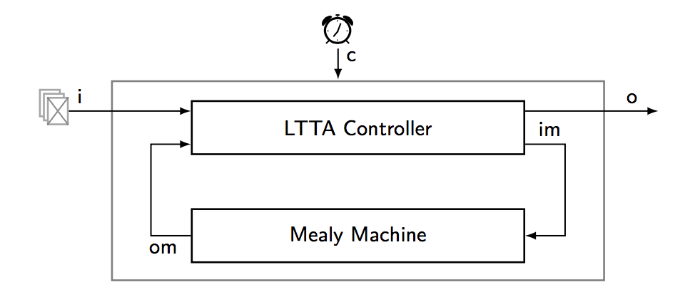

Loosely Time-Triggered Architecture:
Improvements and Comparisons
Guillaume Baudart, Albert Benveniste, and Timothy Bourke
ACM Transation on Embedded Computing Systems, ESWEEK 2015 Special Issue, Vol. 15, N. 4, August 2016
Loosely Time-Triggered Architectures (LTTAs) are a proposal for constructing distributed embedded control systems. They build on the quasi-periodic architecture, where computing units execute 'nearly periodically', by adding a thin layer of middleware that facilitates the implementation of synchronous applications.
In this paper, we show how the deployment of a synchronous application on a quasi-periodic architecture can be modeled using a synchronous formalism. Then we detail two protocols, 'Back-Pressure' LTTA, reminiscent of elastic circuits, and 'Time-Based' LTTA, based on waiting. Compared to previous work, we present controller models that can be compiled for execution, a simplified version of the Time-Based protocol and optimizations for systems using broadcast communication. We also compare the LTTA approach with architectures based on clock synchronization.
- You can find here the submitted paper, and the associated zélus code.
- Note that it requires zélus (version 1.2.0 or higher).
- To compile, just change the path to the zélus directory in the Makefile.

Figure: Schema of an LTTA node: At instants determined by the protocol, the controller samples a list of inputs to triggers the embedded machine, and controls the publication of the output.